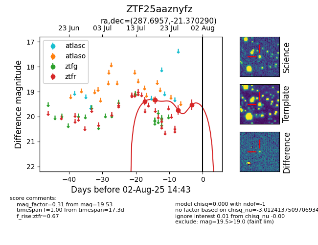

Target ZTF25aaznyfz at 2025-07-23 11:52, see:
FINK: fink-portal.org/ZTF25aaznyfz
Lasair: lasair-ztf.lsst.ac.uk/objects/ZTF25aaznyfz
ALeRCE: alerce.online/object/ZTF25aaznyfz
alt names
ZTF25aaznyfz (ztf,fink)
coordinates:
equatorial (ra, dec) = (287.6957,-21.37029)
galactic (l, b) = (15.6607,-13.65248)
photometry
last ztfr=19.34
2 ztfr detections
